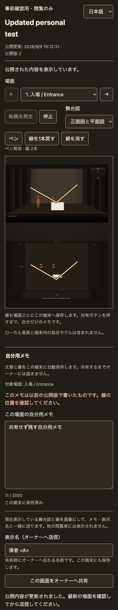
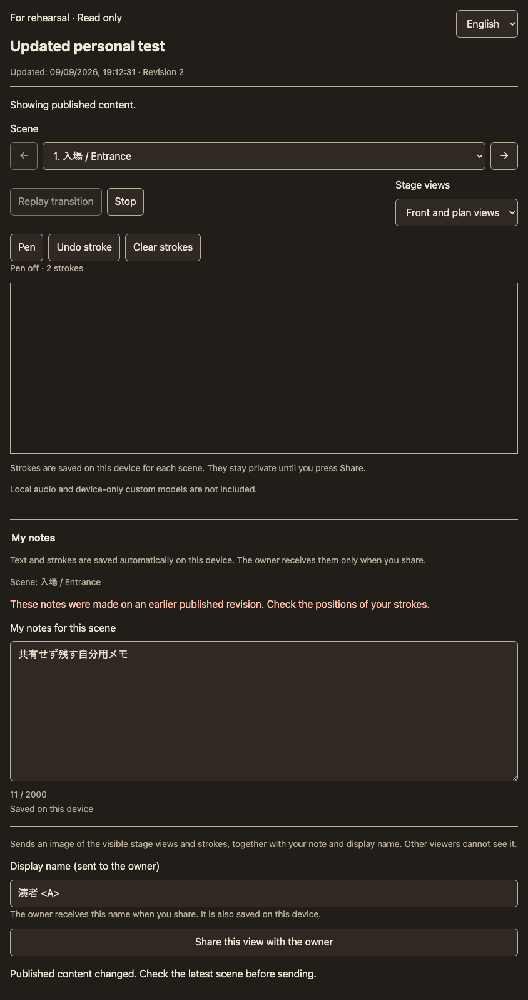
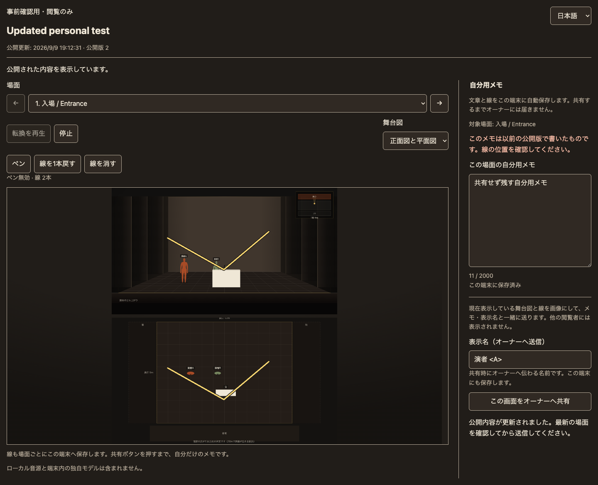
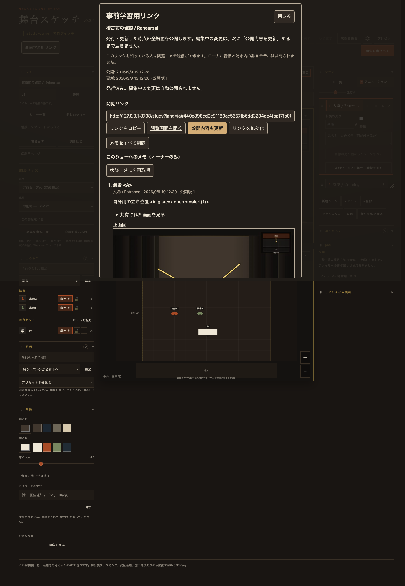

このページは端末専用メモの実装時点の記録です。最新は 無料演者アカウント・端末間同期の確認 を参照してください。
2026-09-09 ローカル実装・確認。従来の「画面内だけの一時ペン」「入力後すぐ送信するメモ」を、この仕様へ更新しました。以前の事前学習リンク確認資料のメモ・ペンの説明より、本ページが新しい内容です。
合成ショーを使う、このMac専用の確認リンクです。既に開いている画面は再読み込みしてください。試用用オーナーは study-owner / local-study-owner。本番の認証情報ではありません。
PC表示の更新：幅901px以上では正面図と平面図をそれぞれ全幅で上下に並べ、メモを下へ配置します。図の16:9比率を保って縦にスクロールする構成です。日英・5画面サイズ・3表示モードの30ケース、両図のペン、フォーカス表示を確認。関連Nodeテスト23件と生成物・公開ビルド検査が成功しています。現在のPC画面・寸法と操作の結果・日本語design-lint・英語design-lint。下の個人メモ追加時の画像は以前の配置です。
個人メモはこのブラウザ・端末だけに保存します。端末間同期はありません。端末の保存領域を消すと個人メモも失われます。保存失敗は画面内に表示し、保存できたと誤表示しません。削除された場面の個人メモは保存データ内に残りますが、現在の場面一覧には出ません。
個人メモは専用の stage-study-private-v1:<閲覧トークン> キーで、ショー編集用の保存領域と分離します。文章最大2,000文字、線64本・一筆512点、座標0〜1、最大500場面・シリアライズ後2Mi文字に制限。不正な既存データを上書きしません。個人メモの編集だけではネットワーク投稿は発生しません。
明示的に共有した画像は、既存の StudyLinks SQLite Durable Objectに分割保存します。画像そのものの取得にもWorkerの認証済み所有者一致が必要です。メモ一覧には画像の種別・寸法だけを返し、オーナーが開いたときに取得します。閲覧トークンだけ、別オーナー、別受取人には画像を返しません。
JPEG限定、最大2枚、画像データURL180,000文字/枚、1,280px以内・921,600画素以内、投稿全体384KiB、リンクあたり画像データ16MiBをサーバーで制限します。寸法はJPEGヘッダーから読みます。画像取得は private, no-store と nosniff を付けます。本文は引き続きプレーンテキスト、投稿者名は認証済み名を優先。解析への送信はありません。
| 確認 | 結果・証拠 |
|---|---|
| 関連Node / Workerテスト | 765 / 765 成功。ログ |
| 個人保存・画像の追加単体テスト | 7 / 7。端末・場面・トークン分離、保存失敗、不正データ、画像形式・寸法・量・認可。上の765件に含む。ログ |
| 実SQLite画像保存 | 11 / 11。分割画像のバイト一致、プロセス再起動、別所有者拒否、失効後オーナー保持。ログ |
| 既存Runtime回帰 | 25 / 25、既存リアルタイム共有13 / 13。別タスクによるライフサイクル修正を含む現在のコードで実行。ログ |
| 個人メモから画像共有まで | 端末再読み込み、共有しない間の投稿ゼロ、両図の線・表示名付き共有、オーナー画像表示、他受取人の非表示、共有失敗時保持、画面だけの共有、更新後保持。JS例外0件。結果 |
| マウス・タッチのペン | 正面図マウス・平面図タッチ、取り消し・消去、各場面の保持、元のショーが不変。JS例外0件。結果 |
| 元の画面操作回帰 | 発行・コピー成功/失敗・通信エラー・明示更新・失効まで完了。JS例外0件。別タスク編集中のテストは上書きせず、一時コピーで今回の文言と画像表示の期待値だけを更新。結果 |
| 日英・レスポンシブ | 390×844、844×390、768×1024、1440×1000。はみ出しなし、操作領域44px以上。日本語lint・英語lintはNG/WARN/測定不可すべて0。文字コントラスト最小7.67:1。 |
| 生成・構文 | JS構文検査、python3 build_stage.py --check、python3 build_public.py --check、git diff --check 成功。本家index.htmlとベータstage.htmlの資源版、Workerの明示許可、SWを反映。 |
未確認：iPhone / iPad / Android実機、Safari、Apple Pencil、実際の指での描き心地、ソフトウェアキーボード、VoiceOver / TalkBack。本番Cloudflareの配信・実アカウントは検証していません。




実装：stage-study-private.js（新規）、stage-study-viewer.js、stage-study-pen.js、stage-study-frame.js、stage-study-owner.js、study-links.js、study.html、stage-study.css。生成・資源版：build_study.py、index.html、stage-sw.js、生成物study-frame.html / stage.html / try.html。
テスト：tests/study-private.test.mjs、tests/study-screens.test.mjs、tests/study-screen-fixture.json、tools/study-personal-browser-check.mjs、tools/study-image-runtime-check.mjs。資源版の期待値更新：tests/study-links.test.mjs、tests/stage-manual-help.test.mjs、tests/stage-session-shelve.test.mjs。資料：デザイントークンシート、本ページ、ログ・画面証拠。
別タスク「舞台スケッチの料金体系を検討」が同じAPI・オーナー画面・関連テストを修正していることを検出しました。検出後は重なるファイルの追加編集を止め、別ファイルでテストを追加しています。上限・削除・再発行に関する並行作業はこの追加機能の成果には含めていません。既存の未コミット差分を戻したり上書きしたりせず、対象外の18ファイルは元の着手時とバイト一致です。保護確認
push、commit、デプロイ、公開、外部送信、秘密情報の登録は実施していません。今回の画像追加で新しいbinding・migrationは不要です。事前学習リンク全体の初回適用には、既存設定の STUDY_LINKS → StudyLinks と v3-study-links: new_sqlite_classes = ["StudyLinks"] が必要です。既存v1/v2 migrationとbindingを保持し、本番履歴を照合してから適用してください。run_worker_first = true と事前学習ページ・明示資源の同梱が必要。本家が別WorkerならそのWorkerにもAPI・bindingが必要です。配信手順の詳細は元の確認資料にあります。
cd '/Users/arata/Library/Mobile Documents/com~apple~CloudDocs/claude code files/show-creative-ideas/shosai-app' STUDY_MINIFLARE=/Users/arata/.npm/_npx/32026684e21afda6/node_modules/miniflare/dist/src/index.js node tools/study-preview.mjs
確認サーバーは127.0.0.1:8796で起動中。個人メモを試すときはページを再読み込みし、文章と線を残して再読み込み、次に表示名を入れて「この画面をオーナーへ共有」を押してください。オーナー側は合成ショーを別のショーとして読み込み、「事前学習用リンク」から確認できます。
node --test tests/stage-*.test.mjs tests/worker-*.test.mjs tests/usage-metrics.test.mjs tests/study-*.test.mjs STUDY_MINIFLARE=/Users/arata/.npm/_npx/32026684e21afda6/node_modules/miniflare/dist/src/index.js node tools/study-image-runtime-check.mjs STUDY_BASE=http://127.0.0.1:8798 STUDY_PLAYWRIGHT=/Users/arata/.npm/_npx/9833c18b2d85bc59/node_modules/playwright/index.js node tools/study-personal-browser-check.mjs python3 build_stage.py --check python3 build_public.py --check git diff --check
ブラウザテスト用サーバーは STUDY_PORT=8798 STUDY_PERSIST=/tmp/study-personal-test-sqlite-20260909 を付けて起動します。検証は専用プロファイルと合成データで行い、使用中のブラウザに保存されたショーへは触れません。
{kind=link}